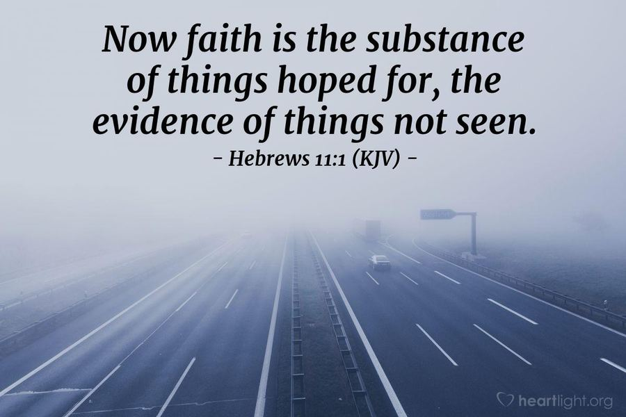
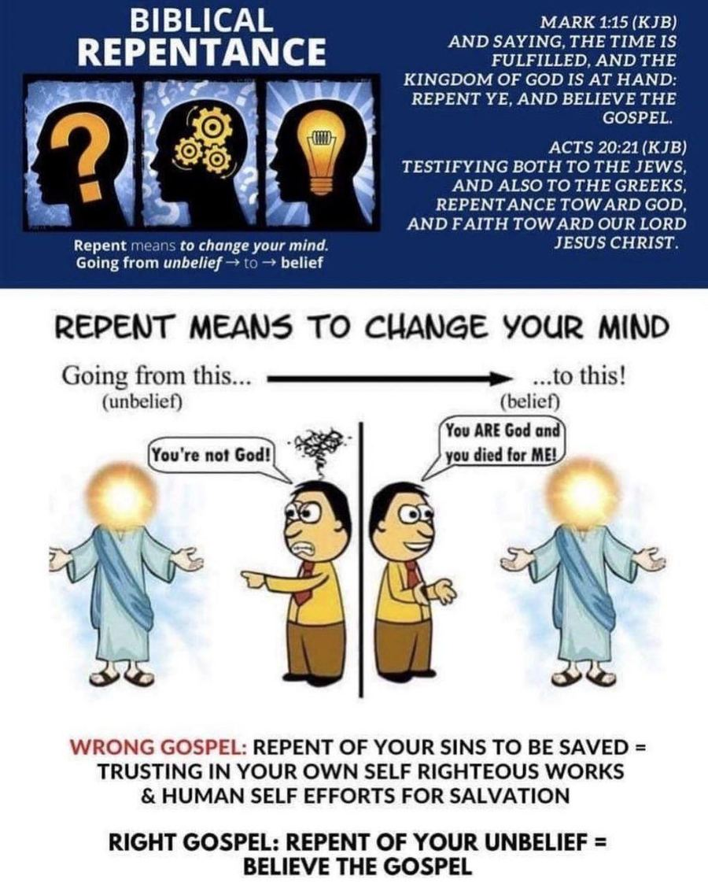
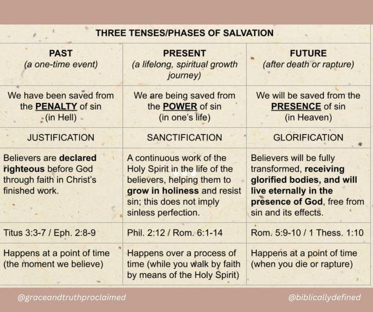
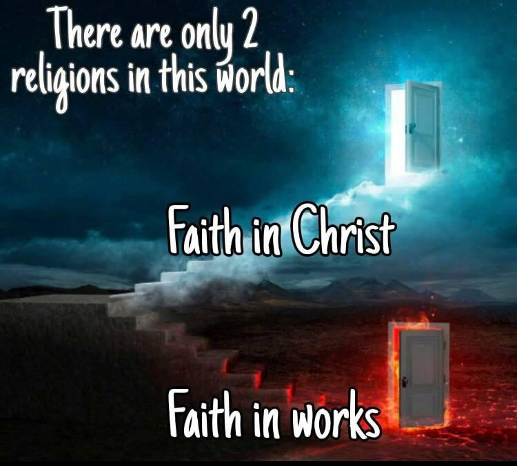
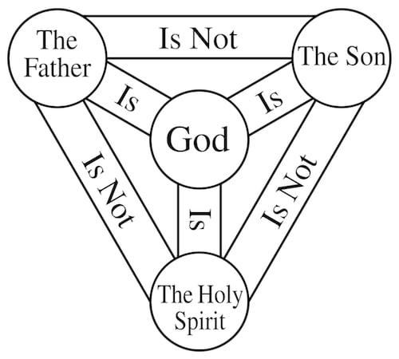
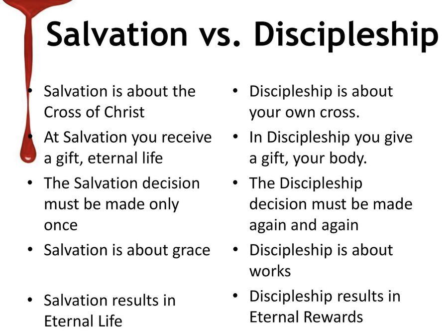
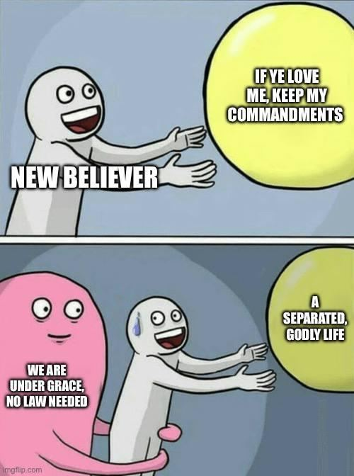
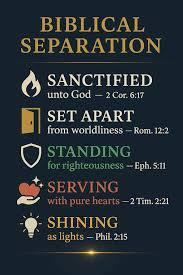
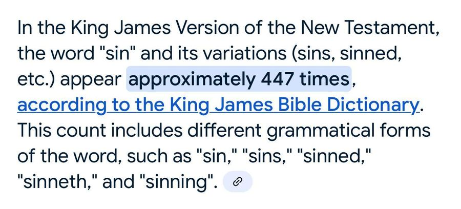

Terms & Conditions
The vocabulary of the faith: plain definitions for the words we build our doctrine on
✦ ✦ ✦Every field of study has its own language, and theology is no exception. Before we can rightly divide the Word, we need to agree on what its key terms actually mean. Tap any gold reference for its supporting Scripture.
A Working Glossary
How We Are Saved: Grace, Faith, Repentance
Soteriology: the doctrines and teachings of salvation. Six terms that describe how a sinner comes to stand right before a holy God.
Grace
The unmerited, unearned, undeserved favor of God. Mercy extended to someone by the unconditional love of another. The favorable influence of God on persons and situations.
Faith
The persuasion of mind that something is true, trustworthy, and able to be counted on, without having seen direct evidence. Belief and trust in someone’s word are the characteristics of faith. Every man is given a measure of faith by God ().
Repentance
A change of mind or heart when presented with new information. The Greek metanoeo means “to change one’s mind.” The emphasis is on a shift in thinking and perspective, not on feeling remorse or regret. Sorrow at wrongdoing being pointed out can lead to repentance, but is not repentance itself.
How We Are Saved: Salvation, Justification, Propitiation
Salvation
The deliverance from sin and its consequences, by grace through faith in Jesus Christ. It is a gift of God, not something earned by works, a one-time event that, once secured, cannot be lost. “Save,” “saved,” and “salvation” are also used in Scripture for physical rescue, depending on context.
Justification
The act of God by which He declares a sinner to be righteous and free from the guilt of sin. This is a legal declaration based on the righteousness of Christ imputed to the believer through faith: “just as I’ve never sinned.”
Propitiation
The act of appeasing or satisfying God’s holy wrath against sin. Jesus Christ, through His death on the cross, is the propitiation for our sins.
Hebrews 11:1

Grace: God’s Riches At Christ’s Expense
Biblical Repentance

Past, Present & Future
Justification, sanctification, and glorification are three tenses of the same salvation: a past event, a present process, and a future certainty.

Every Belief System Reduces to One of Two Doors

The Godhead: Trinity, Godhead, Holy
Who God is: His triune nature, and the attributes that belong to Him alone.
Trinity
The theological name for the concept of the Godhead: the three persons of God: the Father, the Son, and the Holy Spirit.
Godhead
The essential being, or nature, of God. All persons of the Trinity are of the Godhead.
Holy
Hallowed; consecrated or set apart to a sacred use, or to the service or worship of God, as with the holy sabbath, holy oil, holy vessels, a holy nation, the holy temple, a holy priesthood. God Himself is holy, being perfect and separated from all things that aren’t holy.
The Godhead: Omnipotent, Omniscient
Omnipotent
All-powerful. A trait found only in the Godhead.
Omniscient
All-knowing. A trait found only in the Godhead.
The Shield of the Trinity

God’s Sovereign Plan
How God’s choosing and man’s believing work together in salvation.
Elect
Chosen. The saved: the sons and daughters of God. God determined that all who believe on Christ Jesus would be the elect.
Predestination
The act of God determining something to be so before it occurs. Jesus was predestined to be the Lamb slain to take away the sins of the world. In terms of salvation, God predestined the means and results of salvation, not who specifically would be saved.
Reprobate
Rejected. In the context of salvation, it refers to those given over to a reprobate mind because they rejected the truth of God and held it in unrighteousness: conscience seared as with a hot iron, filled with all unrighteousness, unable to come to the knowledge of the truth.
The Christian Life: Sanctification and Separation
Salvation is a gift, received once. What follows, a lifetime of being set apart and following Christ, is a different matter altogether.
Sanctification
The process by which a believer is set apart from sin and made holy: both a lifelong process that begins at salvation and continues until the Rapture, AND the finished work of the Spirit on our spirit, made clean by the blood of Christ. Our sanctification will never be perfect; the sanctification of the Spirit is perfect.
Separation
A biblical doctrine commanding believers to be separate from sin, the world, and false doctrine: personal separation in conduct and character, as well as separation from churches and organizations that do not hold to sound doctrine, and from people who compel us toward sin. We are separated not only from the world, but toward the doctrines of God.
The Christian Life: Disciple and Apostle
Disciple
A follower of someone or something. In Christianity, it is following Christ not just as a saved believer, but walking in Him, in the Spirit, and denying yourself to serve others. It is not a requirement for salvation, but a calling we all have. Not all believers are disciples. We must choose to pick up our cross and follow Him, and being a disciple has a cost.
Apostle
Literally, a person sent by another; a messenger, an envoy. A special follower of Christ, used as a witness to His life and to spread the Gospel, generally applied to the twelve chosen for this purpose.
Salvation vs. Discipleship

Grace Is Not License

Biblical Separation

Romans 12:2
And be not conformed to this world: but be ye transformed by the renewing of your mind, that ye may prove what is that good, and acceptable, and perfect, will of God.Romans 12:2
1 John 3:4
Whosoever committeth sin transgresseth also the law: for sin is the transgression of the law.1 John 3:4
The End Times: Rapture, Millennium, Eschatology
Eschatology: the doctrines and teachings of the end times.
Rapture
Latin for “caught up,” a theological term for the resurrection of believers on the day of redemption, the gathering of the elect. The exact timing of this event is disputed by differing interpretations of Scripture surrounding it, but the reality of it is indisputable.
Millennium
The period of time between the end of the wrath, where Satan is bound for 1,000 years in Hell, and his release to deceive the nations for “a little season.” This view is called Premillennialism by those holding a “postmillennial” or “amillennial” position.
Eschatology
The doctrines and teachings of the End Times.
Rightly Dividing the Word
Two opposite approaches to Scripture: one starts with the text, the other starts with a conclusion already in hand.
Exegesis
Receiving doctrine from the interpretation or understanding of Scripture. “The Bible says it, I believe it.” You start with the text and let it speak.
Eisegesis
Using the text to justify existing traditions or opinions, and to confirm biases. You start with a conclusion and go looking for a verse to support it. Watch for it: “Faith without works is dead” (); “Baptism doth now save us” (); “Make Jesus Lord of your life”; “Repent of your sin to be saved.” Context matters: God is not the author of confusion (), and it is not up to you to square a contradiction for the person who introduced it. It is on them to.
A Simple Word Study

Count check against the KJV text: “sin” appears 447 times in the whole Bible (112 times in the New Testament). In the New Testament, sin, sins, sinned and sinneth together appear 222 times.